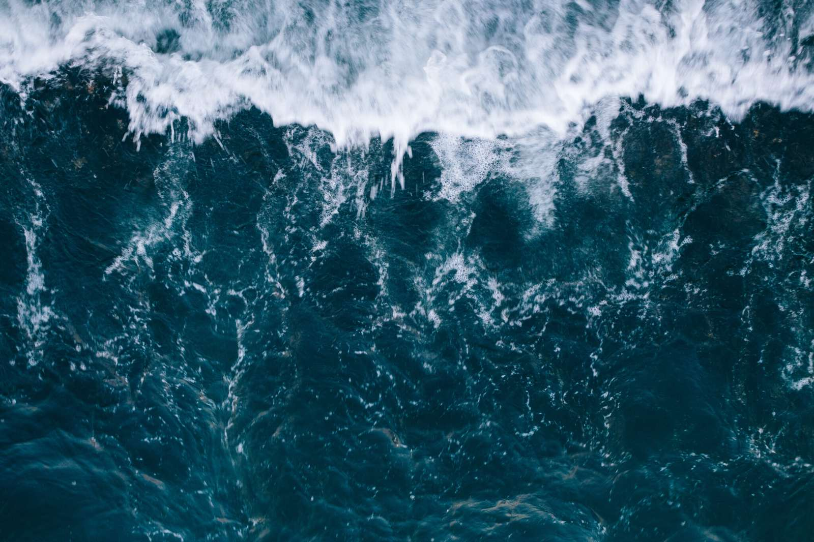

Today
AI news, benchmarks and prices — sorted by depth, not by noise.

Surfacefast & recent
The strongest signals of the last cycle, duplicate coverage merged into one entry and scored 0–100 for significance.
Currentsactively moving
Worldwide web-visit share across the major assistants.
Open ecosystem viewMidwatergaining evidence
Ranked on published evaluations and human preference — not vendor claims. Anything unpublished is labelled an estimate.
Marketscompute & capital
Merged from real rented offers on public GPU marketplaces — actual listings, not estimates.
Open compute pricesSeabed · slow & structural
Research that hasn't landed, capital measured in years, policy still being drafted. Nothing here changes today — which is why it gets its own layer.
Everything above, kept current automatically, with every figure linked back to where it came from.